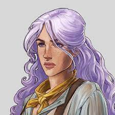

Shaun Gilmore, Critical Role, Vox Machina
Tiberius Stormwind, Critical Role, Vox Machina
Laudna, Critical Role, Bells Hells
In Dungeons & Dragons 5th Edition, the Sorcerer is a unique
spellcasting class
with innate magical abilities. Sorcerers derive their power from their
bloodline,
ancestry, or some other intrinsic source, setting them apart from
other spellcasters.
They cast spells using charisma as their primary attribute and possess
limited spells known,
but their unique feature is "Metamagic."

Imogen Temult, Critical Role, Bells Hells
Nydas Okiro, Critical Role, Exandria Unlimited: Calamity
Pete, Dimension 20, The Unsleeping City
This allows them to shape and enhance their spells
in extraordinary ways, making their magic highly customizable. Whether
they're harnessing
the power of dragons, wild magic, or other origins, Sorcerers are
spellcasters with a
distinct and personal connection to magic,
offering a dynamic and individual approach to spellcasting.